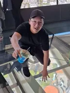
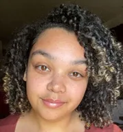
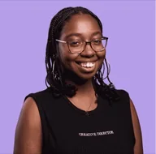
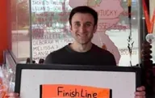

Interviews
I ask people about their careers, what the work is like, and how they got there. 85 conversations and counting.
Mark Macdonald
Product Lead · Yext
“It was relatively straightforward for me to work with an AI coding tool to build an MCP (Model Context Protocol)…”
Katie Tilson
Global Client Lead (Account Executive) · Google
“What mattered more to me was a job where I could have work-life balance, I didn’t care about climbing the ladder.”
Hannah Koresky
Project Manager · Peak Design
“It's a little bit of a career change, but it gets me back to where I want to be: building.”
Matt Eyre
Talent Brand and Marketing Manager · Avalara
“I’ve also been figuring out how the recruiting team can use AI…”
John Livengood
Senior Director of Global Brand Marketing · Avalara
“You have to have perspective. You have to have a point of view.”
Brianna O.
Studied Public Health
“We definitely use AI, probably a lot more this last year than we ever have.”
Gus Baxter
Assistant Director · Drew University
“Now that everything has AI attached to it, I’m sure a lot of them are getting scanned automatically first.”
Jordan M.
Studied English, Creative Writing concentration
“I believe on the surface, my purpose is to bring joy to those around me and support those I love in any way I can.”
Jackson Yip
Director of Development · NUS Business School
“I got my college degree in philosophy, funded by the Singapore government.”
Hassan S.
Studied Creative Writing
“I graduated with a degree in creative writing, but I started with a game design major.”
Owen L.
Studied Broadcast Journalism and Documentary Filmmaking
“I created a pitch deck for a production company and used AI to generate reference images based on the tone and descriptions of each film.”
Michelle K.
Studied Master’s of Clinical Mental Health Counseling
“My confidence has increased, my skills have improved, and I have discovered what sparks my passion.”
Sol D.
Studied Media and Entertainment Management
“I do feel like I learned a ton in college, even if I didn’t go for my first or second choice.”
Joshua C.
Studied Biology
“I don’t really use AI to answer questions unless it’s similar to Googling something.”
Rygel G.
Studied Computer Science
“I think I’ve definitely had to fight to find purpose.”
Angela H.
Studied Business with Marketing
“My biggest struggle right now is AI, both in how it is impacting my industry and in how I should respond to it.”
Josh O.
Studied Psychology
“I don’t know if I can say I’m living a purpose-driven life right now.”
Rachel E.
Studied Environmental Chemistry
“It doesn’t feel like it, but I know I am living with purpose, because everything is in steps.”
Vish J.
Studied Economics with a Minor in Visual Arts
“I’ve also expanded my hobby list beyond just travelling and gaming.”

Tyler Y.
Studied Finance
“I met great people, made close friends, and learned what kind of work energizes me.”
Faheem A.
Studied Psychology
“I didn’t have any volunteer experience, and I needed to take a few more classes before I could move forward with the whole process.”
Grace L.
Studied History
“In five years, purpose will probably mean something entirely different: starting a family, adopting another dog, figuring out how mortgages work…I don’t know!”
Evan A.
Studied Business Administration
“I started courses in AI, and it was the same thing.”
Brandon H.
Studied Advertising
“I think to some good degree, I have a purpose driven life, though I am not at my full potential.”

Cheyenne B.
Studied Biomedical Sciences
“I feel like that’s very, very difficult, especially with this whole ATS system and the AI scanning resumes.”
Corey B.
Studied Marketing
“I chose marketing because it felt like the most logical pathway to be creative in the modern job landscape.”
Aliyah J.
Studied Political Science (Biology minor)
“I chose my major because I really loved learning about politics in high school.”
Nicolas R.
Studied Criminology
“In retrospect, if I had just gone to a tutor and pushed myself a little more, I could have learned to like those subjects.”
Ben H.
Studied Film and Television (Minor in Computer Science)
“I was able to have AI help me with some of the math and and the logic there.”
Sabih S.
Studied Computer Science, (Geography Info Systems minor, Business minor)
“My goal right now is to talk to as many people in the space, mainly project managers, and learn from them.”
Isabel K.
Studied Film
“I think I grew a lot as a person, and really learned how to push myself.”
Arva H.
Studied Applied Linguistics
“I am still in training, so I’m learning new information everyday about the role.”
Muiz Z.
Studied Business Administration, Marketing
“They basically asked me if I’d ever given business administration any thought, because it involves talking to people and building relationships.”
Evarist B.
Studied Business Administration, Business Cinematic Arts
“My thoughts around purpose have drastically changed since I graduated from school.”
Cole M.
Studied Journalism
“We’re molded by our experiences, and what once gave you purpose can suddenly no longer feel right.”
Vlad S.
“My main project at the moment is working with AI models on what’s referred to as stumping.”

Trinity A.
Studied Television, Film, and Media
“I work in the journalism industry as a digital producer.”
Emilee K.
Studied Illustration
“I wish I had learned so much sooner not to be afraid of life and what it has to offer.”
Brandon S.
Studied Business Administration
“I know it’s so cliché, but it really is all about who you know and the relationships you build.”
Greg A.
Studied Linguistics (minor in Spanish)
“I learned a lot about myself and about the world of linguistics and speech.”
Erika D.
Studied French Education
“I currently work part-time at a learning center tutoring K-12 students in reading, math, ACT prep, and French.”
Eli D.
Studied Music
“Music is absolutely a subject best learned in person, and I felt “robbed” by having to take the latter half of my degree online.”
Jaimasan S.
Studied Mathematics & Philosophy (Bachelor’s), Statistics (Master’s)
“Learning to dedicate myself to my hobbies in a way that doesn’t feel overwhelming or exhausting, or unfulfilling.”
Lindsay M.
Studied Public Relations (major) / Graphic Design and Advertising (minor)
“I think I would want to have achieved a sustainable work-life balance.”

Joe V.
Studied Economics
“In general, though, I would say it’s more important to learn skills than a master’s degree.”
Emily H.
Studied Computer Science (minor in Mathematics)
“I don’t want to call out certain job titles or stuff like that, but I recently learned about this role in my company.”
Emma S.
Studied Food and Beverage Entrepreneurship with a minor in Baking and Pastry Arts
“I think I’ve learned methods and tools to manage it, and I’m more motivated than I have been in the past.”
Francesco F.
Studied Mechanical Engineering with minors in Psychology, Mathematics, and Astrophysics
“Instead of joining industry, I decided to further my learning with graduate school and get involved in pursuing new knowledge in the sciences.”
Owen L.
Studied Broadcast Journalism and Documentary Filmmaking
“I think that it’s super important to live a purpose-driven life.”
Mike W.
Studied History
“I spent a good chunk of my career trying to work up my skills.”
Jenna B.
Studied Zoology (minor in Psychology)
“I think it was a great choice, because I genuinely enjoyed the majority of my classes and learned a lot.”
Athena B.
Studied Clinical-focused social work
“So I think meaning and purpose are important for work and also the outside life.”
Jessie L.
Studied Physics
“I actually put my classes in my resume and I said what I learned in a specific class and what I did in the lab.”
Sean K.
Studied Gaming and Simulation Arts with a minor in Sound Design
“I can practice it pretty much every day with just random little offshoot projects and learn something every time I take a stab at it.”
Natalie G.
Studied Diploma in Dental Technology
“I learned that I don’t enjoy factory-esque work and that I find value in interacting with people.”
Gianna A.
Studied Psychology
“I feel like it is that conversation of purpose and feeling like I’m fulfilling my purpose.”
Jacqueline B.
Studied Public Relations
“As a Christian, I believe my purpose is to live for God’s glory.”
Nila M.
Studied UCLA (Bachelors), University of Southern California (Masters)
“I learned so much about the entertainment industry, but I was still not finding the midpoint I wanted.”
Kate P.
Studied AS in Applied Sciences, BS in Criminal Justice and MA in Forensic Psychology
“My long-term plan is to translate my counseling skills and experiential knowledge of the SUD population into legal advocacy.”
Bradley V.
Studied Computer Science
“We work with a lot of the software that nurses use on the daily, for medication administration, anything you’d see in a hospital.”
Jed N.
Studied Biological Science, Business minor
“I’m working to find a balance between school and family.”
Sam B.
Studied Bachelor’s in Writing
“I would describe it as very intensive, definitely a job that tests your ability to write and research on short deadlines.”
Tolu A.
Studied Political Science
“I started working with my community’s non-profit as a food justice aide, helping in my community garden.”
Annie Grace D.
Studied Sustainable Development
“At this table, we share stories of the places we’ve been, and the lessons we’ve learned along the way.”
Aleecia G.
Studied Global Health (B.A) and The Science of Healthcare Delivery (M.S)
“I love literature and love learning about the written word.”
Mya M.
Studied English
“I’m trying to teach myself how to crochet, and I’ve begun learning how to linocut.”
Cecilia F.
Studied English/Creative Writing
“I work morning to early afternoon at the first and afternoon til 5/6ish at the second.”
Yuria B.
Studied International Relations and French
“As someone who loves to learn, it was hard putting down the books after 4 intense years of college (I know – nerd)!”
Keaton B.
Studied History (minor in City Planning)
“I work for the public body running public transport in my metro area.”
Bruce N.
Studied Civil Engineering
“It’s a bit of an experimental thing, but I got it to work with the help of AI and it’s really responsive.”
Alexa R.
Studied Psychology
“I quickly learned there was a lot of politics and just a lot of internal things going on.”
Ankit P.
Atlantic Health Systems
“I work at a hospital called Atlantic Health Systems and teach doctors and nurses how to use the electronic medical record system.”
Do-Hyung K.
Studied Commerce (Real Estate, Sauder School of Business)
“I always feel that there is still so much to learn.”
Julia M.
Studied Biomedical Engineering (biomechanics)
“I highlighted these skills for my interviews and received positive feedback.”
Raneel B.
Studied Biology
“I soon learned that wasn’t going to be very easy.”
Tess I.
Studied Mass Communications with a minor in marketing
“I got so much interaction and suggestions from people, and it was amazing to build that kind of community.”
Jay D.
Studied Professional Sales w/ Minor in Accounting
“I focused on building various fallbacks so I could explore the things I wanted to without too much worry.”
Rebekah N.
Studied Mass Media, Multimedia Emphasis
“I would love to see myself still doing something creative and making a difference through my work.”
Jolie J.
Studied Human Physiology
“I manage my own freelance English teaching business, specializing in instructing medical doctors and students from Japan.”
Tyler Y.
Studied Finance
“Ideally, I would hope I would have started something of my own, even if it’s not full-time or with the purpose of making money.”
Vish J.
Studied Economics with a Minor in Visual Arts
“I work for an AI SaaS company focused in the healthcare space as a Revenue Operations Specialist.”
Madeleine J.
Studied Economics and Anthropology
“My first job was an entry-level marketing job at a baby tech startup, and I learned a lot during my year there.”
Francesca D.
Studied Journalism
“I wasn’t able to be as creative as I would have liked.”
Nicola P.
Studied Marketing & Liberal Arts
“I started doing a mix of social media management, community management/engagement, and creative branding consulting for them in October of 2023.”
Grace L.
Studied History
“It’s very far from my dream job, but I have learned a lot of transferable skills.”